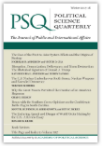

收录于合集

简 介
【文章原题 】The U.S. Nuclear Umbrella over South Korea: Nuclear Weapons and Extended Deterrence
【 作者介绍 】
特伦斯 ·罗里格（Terence Roehrig）， 美国海军战争学院国家安全事务教授、亚太研究组主任。
【 文章来源 】
Political ****Science ****Quarterly ，Volume132, Issue4，Winter 2017—2018，Pages 651-684.
【 期刊介绍 】

Political Science Quarterly，成立于1886年，是哥伦比亚大学每季度出版的政治与公共政策领域的学术期刊，每期包含五到六篇文章以及最多40篇书评。2017年该期刊的影响因子为0.426，在“政治学”类别的169种期刊中排名第146位。
【本文编译】 李桐
************核心观点 ** ** ****** **** ******
1. 核保护伞的政治和象征价值远高于其军事及安全价值；
2.美国核保护伞对韩国安全的重要性仍然存在，但它只是更广泛的安全结构的一部分；
3.对于美国而言，核保护伞部分是为了维护韩国等盟国的安全，但它更多是美国防止核扩散的重要工具。
************扩展威慑理论 &核保护伞
威慑的核心原则即是防御国向挑战国发出威胁，增加挑战国的挑战成本，以避免挑战方采取行动。防御国必须向挑战国证明，无论对方想要实现何种目标，为实现目标所要付出的成本一定会大于收益。防御国可以采取的两种方式包括： 1.拥有足够的军事力量以应对长期战争的消耗并赢取胜利；2.采用惩罚威慑以阻止挑战方采取行动。其中惩罚威慑是核威慑的关键所在。
文章将威慑具体区分为两组类型，包括初级威慑与扩展威慑、即时威慑与常规威慑。在初级威慑的情况下，国家只寻求于保护自身安全，而扩展威慑则是指国家不仅关注与自身安全，还会努力保护其盟友免遭攻击；即时威慑是指当挑战方通过行动或言论发出即将采取攻击行动的信号时，防御方被迫发出具体的反击威胁以阻止迫在眉睫的打击，而常规威慑则是指两个长期处于敌对关系的对手，双方都考虑在适当的情况下对另一方采取武力，尽管没有直接遭受攻击的危险，但都建立足够的军事能力做好打击及应对打击的准备，这种关系相对稳定，充满了敌意与不信任，常规威慑随时有可能向即时威慑转变。
可信性是威慑尤其是扩展威慑所面临的最具挑战性的问题。威慑的可信性要求防御国具备当受到威胁时实施报复的能力，促使挑战国由于顾忌高额成本而克制其行动，最重要的是，防御国必须使挑战国相信，防御国有决心且有能力当威慑失效后对其实施不可承受的伤害。威慑的关键因素是对手相信防御方具备足够的实力，相反，即使防御国具备足够的实力，挑战国也有可能不信服。因此防御国使用核武器的决心、对手的实力、以及防御国的声誉与行为等，都决定了实施威慑的可信性程度。
************威慑可信度与核武器的使用 ** ** ****** **** ******
几十年来，核武器一直是威慑的核心要素。但是，自1945年以来，核武器从未被用于武装冲突，各国也一直不愿使用核武器。各国在使用核武器的问题上较为克制的原因包括：1.各国领导人都清楚核武器的巨大破坏力；2.一旦使用核武器会遭到来自国际社会的谴责，付出巨大的声誉成本；3.使用核武器会造成辐射污染，影响后续的地面军事行动。尽管美国没有声明不首先使用核武器，也没有声明不会对非核国家使用核武器，但不使用核武器的道德禁令使美国很难在非自身生存危机下使用实施核打击，因此核威胁被认为在初级威慑比在扩展威慑中更为可信。
************韩国核保护伞的历史 ** ** ****** **** ******
1 958年1月，第一批美国核武器作为驻韩美军现代化的一部分运抵韩国。美军希望其战术核武器实现超越其实际军事价值的象征意义，如果威慑失败，美国陆军打算在冲突初期使用核武器作为战争战略的一部分，以阻止朝鲜的袭击。随着时间的推移，包括美国最高军事官员在内的许多人开始质疑在韩国部署战术核武器的实用性。美国在韩国部署核武器的目标是削弱朝鲜的攻击，因此核力量需要向前部署在非军事区附近。然而这样做使这些武器容易受到先发制人的打击或在被朝军占领，可能导致无意中升级为核战争。使用战术核武器会产生其他严重后果，半岛爆炸将造成严重破坏，并造成放射性沉降，危及韩国和美国军事人员以及南北朝鲜平民。辐射也可能会流入中国、苏联和日本，造成进一步的核污染并加剧地区紧张局势。到20世纪70年代，美国的核武器已经从其前沿位置移到了更远的南方。到20世纪80年代末，随着冷战的结束，韩国对维持核武器的支持已经开始消退。1991年10月，美国总统乔治布什宣布美国将开始从朝鲜半岛撤走所有美国核武器的进程。此举一部分目的旨在促使朝鲜放弃其核野心并遵守国际原子能机构的检查要求。布什总统还希望这一举动将推动戈尔巴乔夫也这样做，确保苏联核武库在冷战结束前保持安全的状态。1991年12月，撤军程序完成。
************核保护伞下的韩国安全考量
自朝鲜进行首次核试验以来，韩国分析家和领导人一直非常关注扩展威慑以及美国核保护伞在韩国安全考量中的作用。首先，许多分析人士认为，核武器的威力对于阻止拥有核武器的朝鲜至关重要。美国核保护伞的力量提供了必要的确定性，即侵略将给平壤造成严重损失。其次，必须让朝鲜方面相信，如果在冲突中对韩国使用核武器，将会遭受来自美国的核报复并付出巨大代价。此外，美国的核保护伞让韩国敢于使用常规武器应对侵略，而不用担心朝鲜会将常规冲突升级为核冲突，因为这样做会遭到核保护伞下的核报复。第三，核保护伞的价值并不在于实际的战争当中，更多的是抵消朝鲜方面借用核武器获得的政治影响力。第四，美国核保护伞也会对韩国国内政治产生重要影响。当朝鲜测试其弹道导弹和核武器时，韩国领导人可以借助美国的核保护伞减少来自韩国公众的压力，为韩国领导人提供政治掩护。此外，核保护伞使韩国无法就获得自己的核武器进行正式的辩论。最后，尽管韩国分析家承认核武器在对付朝鲜方面的军事用途可能有限，但核保护伞的政治意义至关重要。一方面，核保护伞是美韩联盟实力的重要标志，也是威慑保证的关键信号。另一方面，核保护伞为韩国带去信心，显示出美国对韩国的安全承诺水平超出了传统力量所能提供的水平。美国的核保护伞是韩国安全架构的重要组成部分，虽然美国不太可能发动核打击，但作为向韩国提供整体防务承诺保证的政治信号，保护伞更为重要。
************决心以及美国的核保护伞 ** ** ****** **** ******
首先，如果危机达到华盛顿考虑使用核武器的程度，那么朝鲜就会跨越一条非常严重的路线，例如重大的常规攻击、入侵或核打击。如果发生这样的事件，华盛顿和首尔可能会在广泛的国际支持下，在政权更迭行动中结束这一安全问题。因此，韩国和美国军队将深入参与并进入朝鲜。使用核武器会污染战斗空间，使后续行动变得更加困难。此外，韩国将不得不处理在随后的统一朝鲜中清理受辐射的北方的任务。其次，核爆炸以及伴随的短期和长期影响可能对整个地区造成破坏性后果。虽然朝鲜政权及其军队将成为目标，但核武器将导致成千上万的朝鲜平民在核打击中丧生。第三，美国总统将面临极大的压力，使用核武器开创了一个危险的先例，使其他国家在未来的冲突中更容易使用核武器。即使朝鲜首先使用核武器，使用核武器进行报复只会使重新建立符合美国战略利益的防火墙变得更加困难。最后，虽然核反应极不可能，但美国拥有大量致命和精确的常规武器，它们会毫不犹豫地用来保卫韩国。因此，美国的传统反应更加可信，对朝鲜及其领导人的核武器具有同样的破坏性战略影响。
点击 阅读原文 可获取全文pdf版！
更多阅读
【一周预告】国政学人下周（10.29-11.2）文章推送安排预告！ ****
- SSCI编译
【IR杂志】单极秩序下的不和平与美国外交政策：“连贯非理性体系”的后果
【SSCI·中东研究】漫比季(Manbij)合作路线图与美土关系的未来
【IA杂志· 斯托克斯】特朗普、美国霸权和自由国际秩序的未来
… (更多文章请查看历史文章）
- 中文转载
【美国研究·赵怀普、张自楚】特朗普贸易保护政策对美欧关系的影响
【美国研究·凌胜利】双重困境与动态平衡：中美亚太主导权竞争与美国亚太盟国的战略选择
【美国研究·罗曦】美国构建全域制胜型战略威慑体系与中美战略稳定性
… （更多文章请查看历史文章）
- 资源更新
… (更多信息请查看历史文章）

为方便学人及时接收高质量文章推送
别忘了把国政学人设置 星标 哦~
**
**